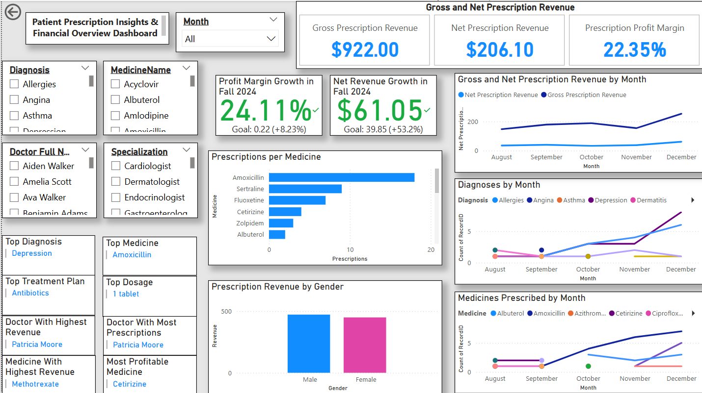

üè• Hospital Management Power BI Dashboards
This project presents a set of Power BI dashboards designed to analyze hospital operations, patient care, staffing, and performance metrics using sample healthcare data.
üìä Dashboards Included
Patient Appointment Trends

Patient Prescription Insights
Medicine Stock & Supplier Performance

Patient Stay & Facility Assignment

Staff Salary Analysis

üõ† Tools & Techniques
Power BI Power Query DAX SQL Data ModelingüéØ What This Project Demonstrates
- Designing interactive dashboards for operational insights
- Data modeling and KPI development
- Visual storytelling with healthcare data
- Presenting BI work to non-technical stakeholders
Source code & files: GitHub Repository